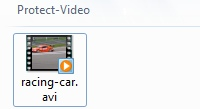
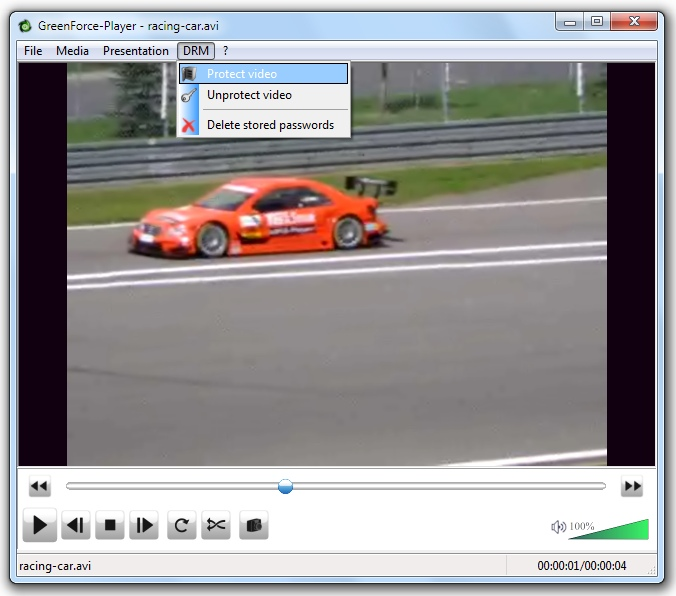
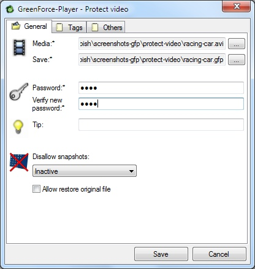
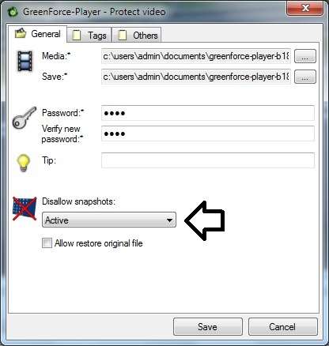
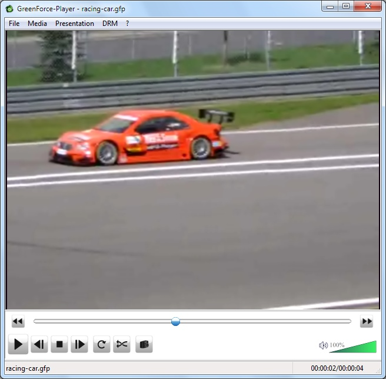
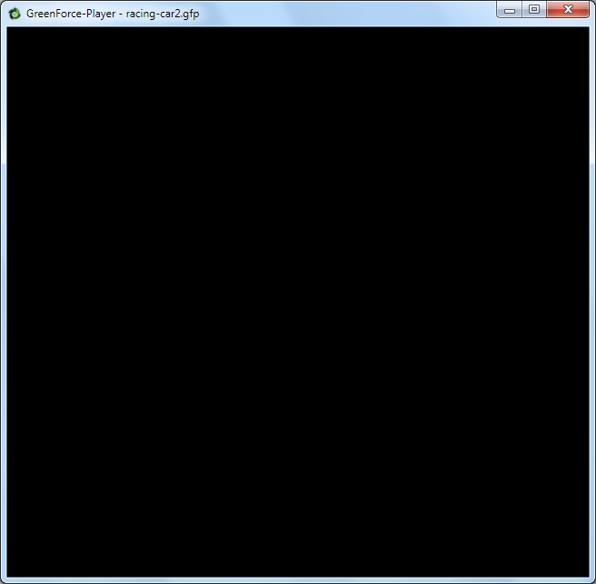
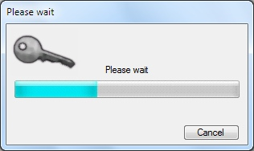
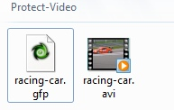

First open the media you want to protect with GreenForce Player. Here we choose a short video with the name "racing-car.avi". However, GreenForce Player can encrypt all kinds of media files.
click on the menu item "Protect Video" in the menu "DRM".
|
 Enter passwordIn the "Protect Video" dialog you can define the file name of the protected file. By default this is the original file name with ".gfp” as ending. To help you remembering the correct password you could also specify a tip which is shown in the password dialog when you try to open the media file. The only necessary step is to enter the password. All other steps we will describe later are optional. |
|
 Protect the video against ScreenshotsOne very interesting feature of GreenForce Player is the possibility to protect the content of your video. So you cannot make screenshots of it. However, please bear in mind that there is no 100% solution to do this and it is still possible to copy the video by filming the content of the monitor. To enable content protection just select the option "Active” instead of "Inactive” Here you can see what happens if we try to make a screenshot. With content protection enabled you will only get a black window: |
|
without content protection |
with content protection |

Now there should be an encrypted file in the destination folder. To open the file just double click on it in the explorer. If you do not want that the password dialog appears then you could also use the command line parameter "/password" to pass the password.
This is the easiest way to protect the file. However, you could also protect files with the Crypt tool.